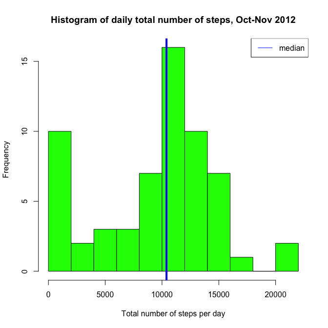
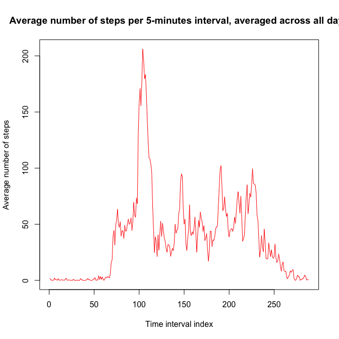
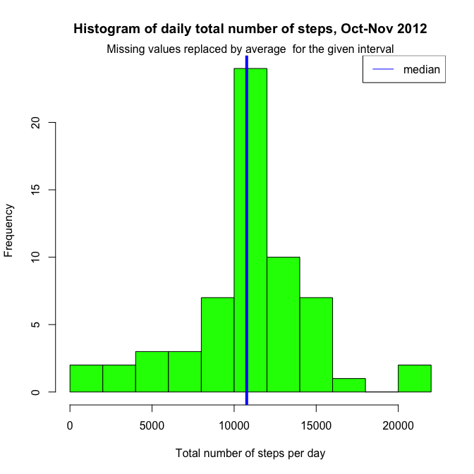
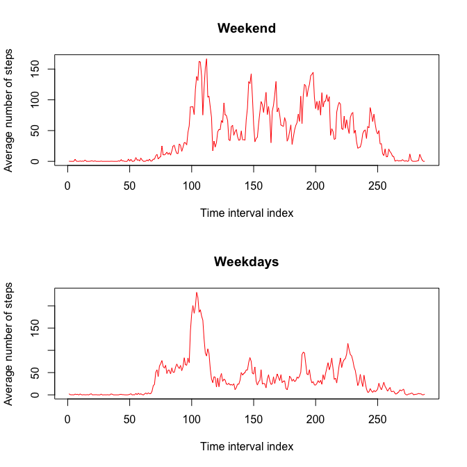

It is now possible to collect a large amount of data about personal movement using activity monitoring devices such as a Fitbit, Nike Fuelband, or Jawbone Up. These type of devices are part of the ???quantified self??? movement ??? a group of enthusiasts who take measurements about themselves regularly to improve their health, to find patterns in their behavior, or because they are tech geeks. But these data remain under-utilized both because the raw data are hard to obtain and there is a lack of statistical methods and software for processing and interpreting the data.
The data used for the below analysis are colected from a personal activity monitoring device. This device collects data at 5 minute intervals through out the day. The data consists of two months of data from an anonymous individual collected during the months of October and November, 2012 and include the number of steps taken in 5 minute intervals each day.
The data set can be downloaded as a zip file (activity.zip) from the following github link: https://github.com/rdpeng/RepData_PeerAssessment1
The variables included in the dataset are:
steps: Number of steps taking in a 5-minute interval (missing values are coded as NA)
date: The date on which the measurement was taken in YYYY-MM-DD format
interval: Identifier for the 5-minute interval in which measurement was takenThe dataset is stored in a comma-separated-value (CSV) file and there are a total of 17,568 observations in this dataset. This covers observations for 61 days, 12 observations per hours for 24 hours.
Make sure the data set is made available in your R working directory
Read and load the dataset into your R environment Some pre-processing is required to transform date and time Note: make use of UTC time zone in all computation to avoid daytime saving differences (time change occurs end October)
# Read Data
data1 <- read.csv("./activity.csv", header=TRUE)
# format date
data1$date <- as.Date(data1$date)
#create a vector with time value corresponding to interval and append it as a new column
DateTime <- seq( ISOdatetime(2012,10,1,0,0,0, tz="UTC"), ISOdatetime(2012,11,30,23,55,0,tz="UTC"), by=(60*5))
Time <- strftime(DateTime, format = "%H:%M:%S", tz="UCT")
data1 <- cbind(data1, Time)Investigate the total number of steps per day by computing the sum of steps for each day between Oct 1st and Nov 30th, 2012
data2 <- with(data1, tapply(steps, date, sum, na.rm=TRUE))
summary(data2)## Min. 1st Qu. Median Mean 3rd Qu. Max.
## 0 6778 10400 9354 12810 21190The total number of steps per day is most frequently in the range [9000 - 15.000] with an average of 9354 steps per day and the median at 10400 steps per day
hist(data2, breaks=10, xlab="Total number of steps per day", col="green", main="Histogram of daily total number of steps, Oct-Nov 2012")
abline(v=median(data2), col="blue", lwd=4)
legend("topright", lty=1, col="blue", legend="median")
First compute the average number of steps per time interval (average is taken between all 61 days of the sample) Convert the result into a dataframe with a time column to allow for graphic plotting
data3 <- with(data1, tapply(steps, interval, mean, na.rm=TRUE))
df3 <- data.frame(time=names(data3), mean=data3)
df3$time <- as.POSIXct(df3$time, tz="UTC", format="%H:%M:%S")
# display max value
df3[df3$mean == max(df3$mean), 2]## 835
## 206.1698The average daily activity pattern shows a maximum number of steps around 8:35 in the morning (with a peak at 206 steps) This peak in daily activity correspond to interval number 104
plot(data3, type="l", col="red", main="Average number of steps per 5-minutes interval, averaged across all days", xlab="Time interval index", ylab="Average number of steps")
There are 2304 records with missing steps values
MissingData <- data1[is.na(data1$steps), ]
nrow(MissingData)## [1] 2304#replace missing steps values by the mean value or corresponding interval
data4 <- data1
for ( i in 1:nrow(data4)) {
if ( is.na(data4$steps[i])) {
data4$steps[i] <- df3$mean[data4$Time[i]]
}
}
# compure new average daily activity
data4b <- with(data4, tapply(steps, date, sum, na.rm=TRUE))
summary(data4b)## Min. 1st Qu. Median Mean 3rd Qu. Max.
## 41 9819 10770 10770 12810 21190Replacing the missing values by the average number of steps for the given interval has limited effect on the total number of steps taken per day, pushing the mean and median to 10770 steps (average number of steps increase by ~15% from 9354 to 10770)
hist(data4b, breaks=10, xlab="Total number of steps per day", col="green", main="Histogram of daily total number of steps, Oct-Nov 2012")
abline(v=median(data4b), col="blue", lwd=4)
legend("topright", lty=1, col="blue", legend="median")
mtext(text="Missing values replaced by average for the given interval")
Add a column indicating the day of the week to data file (starting from file with missing values replaced)
library(dplyr)##
## Attaching package: 'dplyr'## The following objects are masked from 'package:stats':
##
## filter, lag## The following objects are masked from 'package:base':
##
## intersect, setdiff, setequal, unionwd <- weekdays(data4$date)
data5 <- cbind(data4, wd)
# replace day of the week by factor
data5$wd <- ifelse(data5$wd %in% c("Saturday","Sunday"), "Weekend","Weekday")
data5$wd <- factor(data5$wd, levels = c("Weekday","Weekend"))
# split in two dataset and compute average values
data5a <- filter(data5, wd == "Weekend")
df5a <- with(data5a, tapply(steps, interval, mean, na.rm=TRUE))
data5b <- filter(data5, wd == "Weekday")
df5b <- with(data5b, tapply(steps, interval, mean, na.rm=TRUE))A split of activity between weekdays and weekends shows more “active” intervals during the weekends. The absolute maximum number of steps still occurs during weekdays in the morning.
par(mfcol=c(2,1))
plot(df5a, type="l", col="red", main="Weekend", xlab="Time interval index", ylab="Average number of steps")
plot(df5b, type="l", col="red", main="Weekdays", xlab="Time interval index", ylab="Average number of steps")